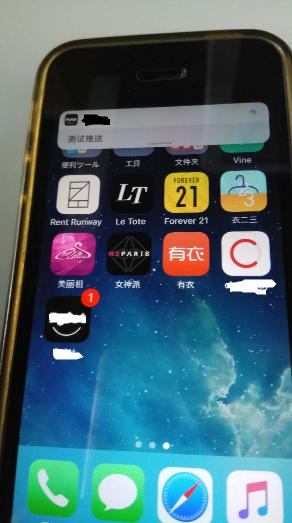
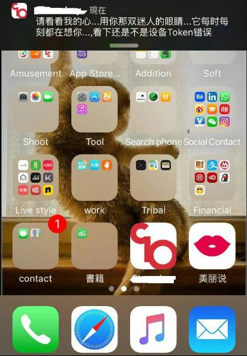

说起苹果的推送,可能很多开发人员就开始头疼了,因为实现苹果推送服务是1个比较蛋疼的事情,于是便引入了第3方推送平台,比如极光、信鸽之类的服务。
由于苹果原生APNs蛋疼的协议,致使本来很简单的1个推送服务让人望而却步。直到苹果最近的HTTP2协议的出现才有所改善。
一直以来,http2这样新潮的名字都只能出现在nodejs、go这样的编程语言中。在网上输入关键字http2,点击进去就会发现各种各样使用nodejs实现的HTTP2服务器,利用nginx版本1.9.5版本搭建HTTP2服务之类的文章。这些文章确实让人热血沸腾、激动人心。
然而,在Python中迟迟不见有任何的实现,不免觉得已经落伍了。实际上,在项目过程中更多追求的是稳定和健壮,更多关于新潮的技术只能先看看。比如最近比较火的直播节目,实际上用Python也是可以完全实现的,而且性能还是挺不错的。
下面是一些编程语言使用HTTP2的原生推送的实现:
- node-apn,1个基于nodejs语言的实现。
- apns-http2,1个基于Java语言的实现
- apns2,1个基于Go语言的实现
而在Python中,还完全停留在旧的Binary API的版本中,而唯一的1个HTTP2的实现PyAPNs2在Python2中不能正常的运行。不过,不要灰心,下面我们自己动手写1个。
在这里,我们简单的通过Python来实现以下内容:
- 原生APNs推送
- 推送的异常处理
下面我们分别来进行说明。
文档说明
首先来看下官方的文档,如果你直接从百度上进行搜索然后进行点击后会发现对应的链接跳转是1个404页面,关于这个问题已经在苹果APNs推送页面丢失问题中进行说明了,其跳转后的地址如下:
https://developer.apple.com/library/content/documentation/NetworkingInternet/Conceptual/RemoteNotificationsPG/Chapters/ApplePushService.html
而实际对应页面的地址应该如下所示:
https://developer.apple.com/library/content/documentation/NetworkingInternet/Conceptual/RemoteNotificationsPG/APNSOverview.html
由于苹果官方采用了HTTP2协议,相比之前的Binary API而言,可以说简化了很多内容,自然而言代码也精简了很多。
依赖的库
为了实现HTTP2的推送服务,我们需要安装hyper这个库,它是1个Python实现的HTTP2的客户端,我们可以通过pip进行安装。
而该库主要依赖于cryptography、pyOpenSSL这2个库,因此我们需要提前安装好cython和openssl的C库开发文件。
pip install hyper
实际代码
安装完成hyper后,我们可以通过如下的方式来实现1个推送服务:
from hyper import HTTPConnection, tls
token = 'xxxxxx-xxxxx-xxxx-xxxxx'
payload = {
'aps': {
'alert': '测试推送',
'sound': 'default',
'badge': 1,
}
}
headers = {
"apns-topic": '证书的主题名称',
}
conn = HTTPConnection('api.development.push.apple.com:443', ssl_context=tls.init_context(cert='证书文件名称'))
conn.request('POST', '/3/device/%s' % token, body=json.dumps(payload), headers=headers)
resp = conn.get_response()
d = resp.read()可以看到,这个推送服务的核心代码只有寥寥3行就已经完成了。在这里,我们通过HTTPConnection连接到苹果推送服务器的443端口上,然后我们初始化推送证书。
之后我们通过POST方法请求苹果的推送服务器,在这里需要传递要推送的设备的Token,然后推送的内容为1个JSON的格式,最后再附对应的头信息即可。
如果推送失败后,苹果的推送服务器会返回1个错误的信息。下面是1个HTTP2推送成功后的截图:

而后是Binary API推送的接口的截图:

可以看到,我们成功的接收到了推送的消息。相比旧的Binary API接口,HTTP2的推送服务的速度快2倍以上,在测试的时候,基本上在5s内就可以收到,而旧的接口基本上等待15-30s才可以收到。
而在HTTP2协议中,主要有以下一些响应的状态码:
- 200,推送成功。
- 400,请求有问题。
- 403,证书或Token有问题。
- 405,请求方式不正确,只支持POST请求
- 410,设备的Token与证书不一致
更多状态码可以查阅。
开源的实现
上述推送服务虽然简单,但是操作起来还是挺繁琐了,特别是错误处理这块。在这里,要感谢我隔壁哥们的辛勤付出,他对上述的代码进行了封装并进行了开源。
我们可以通过pip直接进行安装:
pip install applepush
然后我们只需要在代码中进行如下的调用即可:
from applepush import ApplePush
apns = ApplePush('证书文件名称', 'bundle ID')
resp = apns.single_push('苹果设备token', "推送内容")而返回的结果类似如下:
{
'status': 成功为200，错误为其它,
'headers': {
'apns-id': 苹果推送返回的UUID,
},
'data': 苹果接口返回的字符串,
'error_msg': 错误原因，如果推送成功为None
}
然后我们根据返回的结果与实际业务进行结合。
结语
虽然通过Python使用HTTP2来实现苹果的推送服务是1个比较简单的事情,甚至会觉得比较枯燥无味的事情。
但是,如果你从Binary API到HTTP2,把这2个协议研究一遍,再把证书的签名及转换的内容过一遍,可以查看另1篇文章使用openssl实现私钥和证书的转换,或许你会收获更多。
当然,在这个过程中还有其他一些内容,比如根据证书内容来自动实现识别推送环境(测试还是生产),进而不同的推送版本,以及如何嵌入C库来实现更快的HTTP2推送服务都是可以实现的。
参考文章:
https://imququ.com/post/nginx-http2-patch.html
http://hyper.readthedocs.io/en/latest/